蛋白质模拟的标准流程
- 获取结构:通常在RCSB等数据库或者课题合作者处获取pdb文件，也可以用Modeller等工具做同源模建等方式建立，或者通过AlphaFold、Robetta等基于序列直接预测结构
- 数据库中：解析度 1.8埃已经足够好。—般建议尽量用解析度不超过 2.5埃的结构，>3.0埃的使用则须谨慎。
- 对pdb文件进行预处理
- 拿到pdb后，应检查一遍REMARK字段，看有无非标准残基、配体，有无原子缺失。然后做以下步骤对结构预处理
- 删除X光测定的pdb中带的少量结晶水(在pdb文件末尾)，关键位点的则保留
- NMR测定的pdb含多帧时，选取要用的帧而去除其它的(要用的是第一帧的话可以不用删其它帧)
- 在pdb中搜索missing：补全关键性的缺失残基、补全个别残基缺失原子
- 拿到pdb后，应检查一遍REMARK字段，看有无非标准残基、配体，有无原子缺失。然后做以下步骤对结构预处理
- 产生拓扑文件(pdb2gmx)
- 设置盒子(editconf)
- 加水(solvate)
- 加抗衡离子(genion)
- 能量极小化
- 对蛋白质施加限制势做短时间动力学模拟，以令溶剂充分弛豫
- 长时间动力学模拟
- 分析轨迹和能量文件
1UBQ 泛素
泛素(ubiquitin)是一种存在于大多数真核细胞中的小蛋白。它的主要功能是标记需要分解掉的蛋白质，使其被水解。
获取结构
下载了pdb后，在vmd中打开
- 对`oxygen and numbonds=0`用VDW方式显示可以清楚看到当前体系里的结晶水
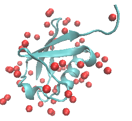
对其它体系，也可以用not protein快速直观检查体系里都有什么 通过B因子进行着色：
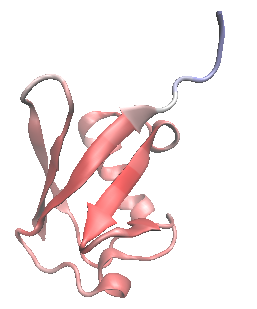
尾部残基B因子很大，而且pdb文件中其occupancy远小于1，测定精度很低。但由于在末端所以无所谓。
对pdb文件进行预处理
- 建立1UBQ目录
- 将1ubq.pdb文件中第一个残基名为HOH的行到末尾处都删除以去掉所有结晶水
- 由于此蛋白尾部链很长，不仅测定精度低，对主体结构也没什么直接影响，还导致模拟时候需要用明显更大的盒子，所以这里索性把72号残基及后面的部分也删除
- 保存为protein.pdb放到1UBQ目录下
产生拓扑文件(pdb2gmx)
产生拓扑文件：
1
gmx pdb2gmx -f protein.pdb -o protein.gro -p topol.top
力场选择14：GROMOS96 54a7 force field
水型选择1: SPC simple point charge, recommended
之后得到了topol.top、protein.gro和posre.itp(提供限制势)
- posre.itp主要是对非氢原子（重原子）的x、y、z方向都增加很大的谐振限制势，用来限制蛋白质的坐标不发生改变
过程中的一些输出：
pdb2gmx默认根据TER标记以及链ID的变化判断有几条链。目前判断只有一条链，含71个残基
1
2
3
4
5
6
7Splitting chemical chains based on TER records or chain id changing.
There are 1 chains and 0 blocks of water and 71 residues with 563 atoms
chain #res #atoms
1 'A' 71 563
All occupancies are oneHIS的质子化态比较模棱两可，pdb2gmx根据氢键判断HIS最适合的质子化态。当前体系68号残基是HIS，被pdb2gmx判断为了HISE，即只在E位有氢，不带电荷
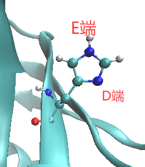
1
2
3
4
5
6
7
8
9
10
11
12
13
14
15
16
17Processing chain 1 'A' (563 atoms, 71 residues)
Analysing hydrogen-bonding network for automated assignment of histidine
protonation. 105 donors and 112 acceptors were found.
There are 166 hydrogen bonds
Will use HISE for residue 68
Identified residue MET1 as a starting terminus. 判断端基
Identified residue LEU71 as a ending terminus. 判断端基
8 out of 8 lines of specbond.dat converted successfully
Special Atom Distance matrix:
MET1
SD7
HIS68 NE2540 1.621
Start terminus MET-1: NH3+ 端基默认当成带电状态
End terminus LEU-71: COO-
Checking for duplicate atoms....
Generating any missing hydrogen atoms and/or adding termini.
Now there are 71 residues with 709 atoms 给端基按照.tdb里的规则加氢下列端基warning只对gromos力场出现，不用管：
1
2
3
4
5
6
7
8
9
10
11
12
13
14
15
16
17
18
19
20WARNING: WARNING: Residue 1 named MET of a molecule in the input file was mapped
to an entry in the topology database, but the atom H used in
an interaction of type angle in that entry is not found in the
input file. Perhaps your atom and/or residue naming needs to be
fixed.
WARNING: WARNING: Residue 71 named LEU of a molecule in the input file was mapped
to an entry in the topology database, but the atom O used in
an interaction of type angle in that entry is not found in the
input file. Perhaps your atom and/or residue naming needs to be
fixed.
Before cleaning: 1212 pairs
Before cleaning: 1456 dihedrals
Making cmap torsions...
There are 538 dihedrals, 314 impropers, 1036 angles
1212 pairs, 715 bonds and 0 virtual sites
Total mass 8023.226 a.m.u.
Total charge -2.000 e 体系净电荷为-2, 需要加抗衡离子
Writing topology
设置盒子(editconf)
1 | gmx editconf -f protein.gro -o protein_box.gro -d 0.8 -bt cubic |
- 默认设置下会产生矩形盒子。此时应注意若体系本身偏离球形很多,且在模拟过程中发生了旋转,则可能会与镜像发生 相互作用。像此例用立方 (cubic) 盒子则不用担心这个问题 。 如果对蛋白质设置消除整体转动,用矩形盒子也完令没问题 。
加水(solvate)
1 | gmx solvate -cp protein_box.gro -o protein_SOL.gro -p topol.top |
临时tpr文件：
1 | gmx grompp -f em.mdp -c protein_SOL.gro -p topol.top -o em.tpr -maxwarn 2 |
添加 Na+离子使体系中性化
1 | gmx genion -s em.tpr -p topol.top -o system.gro -neutral |
选择13：SOL，替换掉两个水
也可以加上-conc 0.1 来额外加入 NaCl使得盐浓度和生理环境0.15 M 一致，原理上会更好
能量极小化
1 | gmx grompp -f em.mdp -c system.gro -p topol.top -o em.tpr -maxwarn 1 |
做能量极小化。并不需要收敛得很精确，上限设1000步就够
em.mdp（能量极小化的参数文件）
1
2
3
4
5
6
7
8
9
10
11
12
13
14
15
16
17
18
19define = -DFLEXIBLE
integrator = cg 用cg方法能量极小化
nsteps = 1000 跑1000步
emtol = 100.0
emstep = 0.01
;
nstxout = 20
nstlog = 50
nstenergy = 50
;
pbc = xyz
cutoff-scheme = Verlet
coulombtype = PME
rcoulomb = 1.0
vdwtype = Cut-off
rvdw = 1.0
DispCorr = EnerPres
;
constraints = none
对蛋白质限制性MD
对蛋白原子做限制性动力学，使得水弛豫开之前蛋白质结构不会明显发生改变以免构象出现可能的破坏
1 | gmx grompp -f pr.mdp -c em.gro -p topol.top -r em.gro -o pr.tpr -maxwarn 1 |
top文件包含了：可以看到.top里对位置限制文件进行了引用，但需要通过在mdp里设定define=-DPOSRES使之生效
1
2
3
4; Include Position restraint file
pr.mdp
1
2
3
4
5
6
7
8
9
10
11
12
13
14
15
16
17
18
19define = -DPOSRES
integrator = md
dt = 0.002 ; ps
nsteps = 50000 ; 100ps #水的弛豫比较快，100ps就可以了
...
Tcoupl = V-rescale
tau_t = 0.2
tc_grps = system
ref_t = 298.15 #常温
;
Pcoupl = Berendsen
pcoupltype = isotropic
tau_p = 0.5
ref_p = 1.0 #常压
compressibility = 4.5e-5
;
freezegrps =
freezedim =
constraints = hbonds #跟氢原子有关的键长都约束住有时模拟初期会有一些LINCS warning,只要之后不再出现就不用管。如果一直频繁
出现LINCS warning,甚至导致模拟结果异常、崩溃，可以优先考虑把步长改小为1
fs再试
正式动力学模拟
1 | gmx grompp -f md.mdp -c pr.gro -p topol.top -o md.tpr -maxwarn 10 |
md.mdp
1
2
3
4
5
6
7
8
9
10
11
12
13
14
15
16
17
18
19
20
21
22
23
24
25
26
27
28
29
30
31
32
33
34
35define =
integrator = md
dt = 0.002 ; ps
nsteps = 1000000 ; 2ns
comm-grps = protein
comm-mode = angular
energygrps =
;
nstxout = 0
nstvout = 0
nstfout = 0
nstlog = 5000
nstenergy = 1000
nstxout-compressed = 1000 ；每1000步写入一次xtc轨迹
compressed-x-grps = system
;
pbc = xyz
cutoff-scheme = Verlet
coulombtype = PME
rcoulomb = 1.0
vdwtype = cut-off
rvdw = 1.0
DispCorr = EnerPres
;
Tcoupl = V-rescale
tau_t = 0.2 0.2 #蛋白质和非蛋白质部分要分两个部分控温
tc_grps = protein non-protein
ref_t = 298.15 298.15
;
Pcoupl = parrinello-rahman
pcoupltype = isotropic
tau_p = 2.0
ref_p = 1.0
compressibility = 4.5e-5
...如今做蛋白质动力学都最起码跑10ns，为了省时间这里只跑2ns。
生物分子模拟温度用298.15K、300K或者体温31QK都有，用哪个皆可，对结果影响不大。
默认是对整个体系消除平动，但是对于模拟生物大分子，在模拟中往往发现生物大分子会移动、旋转，给观看带来不便。所以此.mdp中对Protein组使用
comm-mode=angular来消除其平动和转动。但需要用-maxwarn来忽略由此造成的多余的警告。如果不靠angular消除蛋自整体运动，模拟完后用
trjconv后处理轨迹也行。先将蛋自居中并修正周期性:1
gmx trjconv -f md.xtc -s md.tpr -o cen.xtc -center -pbc mol
其中centering组选Protein，输出组选整体。之后再消除蛋白的平动和转动：
1
gmx trjconv -f cen.xtc -s md.tpr -fit rot+trans -o fit.xtc
其中least squares fit组和输出组都选Protein
蛋白质和非蛋白质部分要分两个部分控温，否则两个会温差过大
- 水和离子要放在一起控温，因为它们能量交换比较频繁
分析轨迹
去除水的轨迹
轨迹中感兴趣的通常只是蛋白部分，水原子数远比蛋自多却不是感兴趣的。为了节约硬盘，同时也降低在VMD中载入的耗时和内存占用，可以转化出一份不含水的结构文件和轨迹文件而把原轨迹删掉，这样文件体积比原先往往小一个数量级:
1 | gmx trjconv -f md.xtc -s md.tpr -o md_nowat.xtc |
- 如果想在做动力学的时候就只把非水部分写入轨迹文件中,可以mdp中设
compressed-x-grps = non-water
检查蛋白与其镜像距离
mindist命令的-pi选项可以考察选定的组与它周期镜像间最远和最近距离。如果模拟盒子边界延展距离设得比较小，为保险起见可以用以下命令检验一下整个轨迹中蛋白质与其镜像间的最近距离，如果出现了距离小于非键作用cutoff的情况则轨迹就可能有虚假性。
1 | gmx mindist -f md.xtc -s md.tpr -pi |
可以绘图：
1 | xmgrace mindist.xvg |
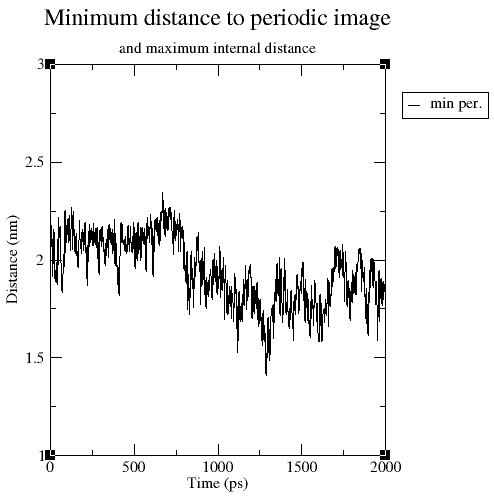
- 如果加上
-nxy，则镜像间最小距离、当前组内原子间最远距离，以及盒子X/Y/Z尺寸随时间的变化都会被同时绘制出来
考察蛋白质的RMSD
运行以下命令，计算轨迹中每一帧的结构和参考结构(-s提供的结构文件)间的质量权重的RMSD:
1 | gmx rms -f md.xtc -s md.tpr -o rmsd_protein.xvg |
要叠合的组，和要计算RMSD的组都选Protein。
绘制成RMSD曲线图
1
xmgrace rmsd_protein.xvg
如果不想考虑质量权重，应额外加上
-nomw选项。
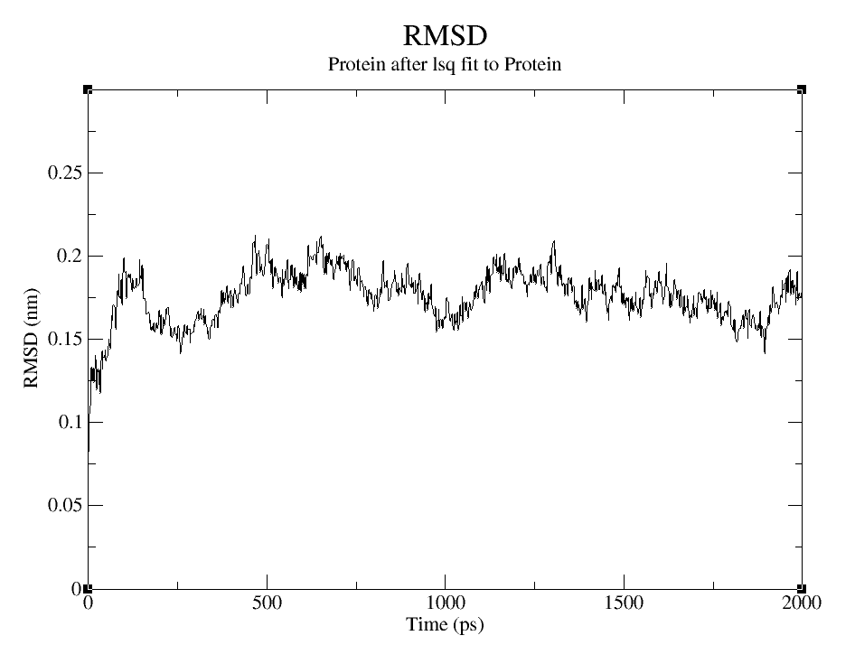
相对于第1帧结构(限制性动力学后的结构)的蛋白质的RMSD曲线对于检验蛋白质结构在模拟过程中是否已经趋于稳定极为关键。当RMSD曲线变化整体上看已经趋于水平，就可以认为己经达到平衡。
对于生物大分子体系，整个体系的温度、密度、总能量等收敛速度远快于蛋白质结构的RMSD，所以看那些对于判断蛋白质平衡毫无用处。
平衡后的RMSD值越大，整体偏离初始结构越大。刚性体系会比柔性体系RMSD小得多
Analysis - RMSD Trajectory Tool
利用VMD也可以绘制RMSD曲线、绘制每个残基的RMSD对总RMSD的贡献
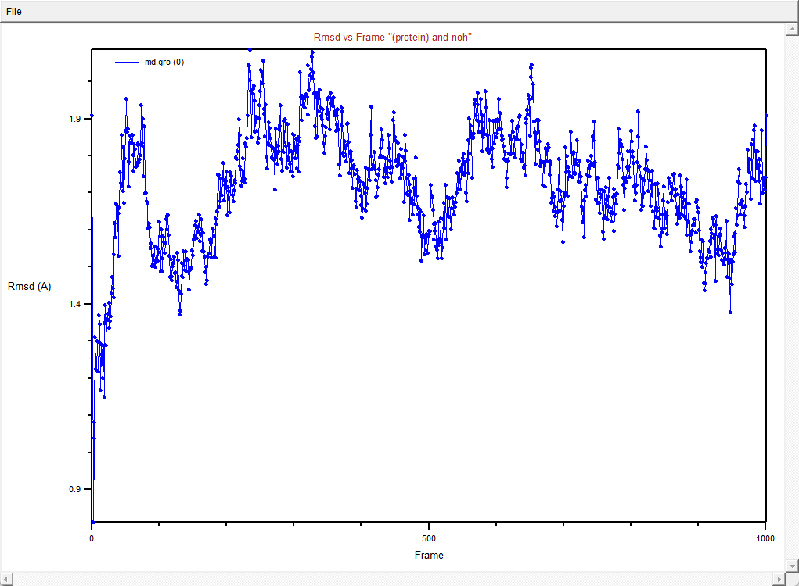
考察RMSF和B因子
运行以下命令，并且选Protein。由于模拟前期明显还未平衡，所以从250ps开始统计
1 | gmx rmsf -f md.xtc -s md.tpr -o rmsf_protein.xvg -oq bfac.pdb -res -b 250 |
- 程序会把轨迹中的蛋白冲着md.tpr中的结构叠合，然后计算原子的RMSF，之后把每个残基中的各原子的RMSF取平均作为残基的RMSF输出到mmsf_protein.xvg中。
-oq要求还使得md.tpr里的蛋白质结构带着计算出的B因子(残基内各原子取平均)写入到bfac.pdb中。 - 不写
-res则输出原子的RMSF和B因子。 - 在VMD中以B因子着色显示bfac.pdb，可以考察模拟中不同区域波动程度，越红(越蓝)波动越小(越大)
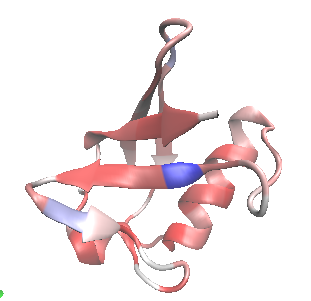
- beta折叠、alpha螺旋这样的稳定二级结构中残基的B因子一般都很小
- 波动显著。在Timeline的RMSD图上此残基数值变化也很大。
绘制 Ramachandran 图
1 | gmx rama -f md.xtc -s md.tpr |
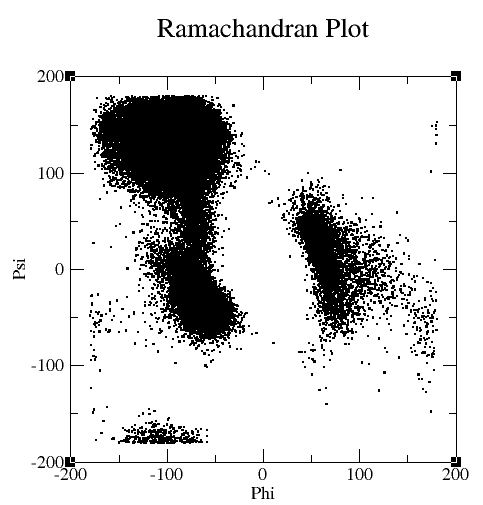
- 使用VMD也可以绘制rama图
分析骨架 psi 、 phi 角度
- GROMACS的
chi命令可以对蛋白质骨架二面角作分析 - 用VMD的Timeline工具也可以，能计算的包括:
- Calc. Phi/Psi:计算各残基Phi/Psi角度随时间的变化
- Calc. delta Phi/Psi:计算各残基Phi/Psi角度相对于第一帧时的变化
考察二级结构的变化
运行以下命令并选Protein组
1 | gmx dssp -f md.xtc -s md.tpr |
得到的scount.xvg中记录了各个时刻形成不同二级结构的残基数，运行以下命令绘制之:
1 | xmgrace -nxy scount.xvg |
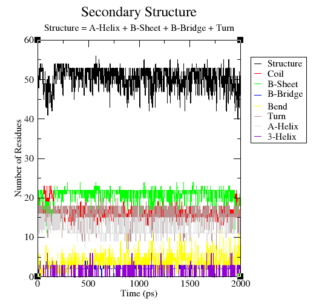
也可以通过glpt程序绘制：
安装使用教程：Description — gplt 0.1.12 documentation
1 | pip install numpy matplotlib colorama pandas openpyxl |
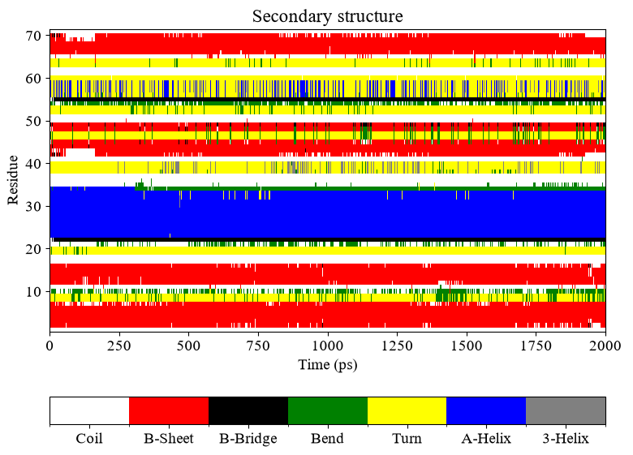
- 利用 VMD 的 Timeline工具也可以绘 制 二级结构随 时间变化。
选Cale Sec. Struct.
考察SASA
- 使用sasa命令可以考察蛋白的溶剂可及表面积。
1 | gmx sasa -f md.xtc -s md.tpr -surface "group protein" -output ' "Hydrophobic" group protein and charge {-0.2 to 0.2}; "Hydrophilic" group protein and not charge {-0.2 to 0.2}' |
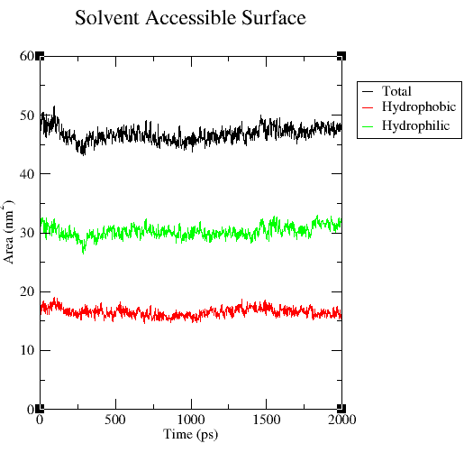
在VMD中也可以计算总的以及亲水、疏水部分的SASA，但VMD中是按照残基类划分的，因此和GROMACS的SASA命令结果有出入。ALA、LEU、VAL、ILE、PRO、PHE、MET、TRP被当成疏水残基。
1
2
3set protein [atomselect top "protein"]
set phob [atomselect top "hydrophobic"]
set phil [atomselect top "not hydrophobic'"]获得蛋白疏水部分的SASA:
1
measure sasa 1.4 $protein -restrict $phob
获得蛋白亲水部分的SASA：
1
measure sasa 1.4 $protein -restrict $phil
这样得到的两部分结果相加等于蛋白质总SASA：
1
measure sasa 1.4 $protein
只计算非极性侧链的SASA：
1
measure sasa 1.4 [atomselect top "sidechain"] -restrict [atomselect top "hydrophobic"]
利用VMD\scripts\proteinSASA.tcl可计算所有帧的SASA。并行计算脚本:并行计算溶剂可及表面积(SASA)的VMD脚本sasa-dmp.tcl - 分子模拟 (Molecular Modeling) - 计算化学公社
分析残基间的距离矩阵
1 | gmx mdmat -f md.xtc -s md.tpr (选择Protein) |
- VMD也可以：Extensions-Analysis - Contact Map。选择Calculate-Calc.res-res Dists后它会计算残基之间Alpha碳的距离并显示在图中。黑色为0埃，白色对应大于10埃。
分析氢键
建立hbond目录，进入其中
1 | gmx hbond -f ../md.xtc -s ../md.tpr -dist -ang -life -nhbdist |
- 可以选择两次Protein分析蛋白内氢键整体特征和数目
- 也可以选Protein然后SOL分析蛋白质与水之间的氢键整体特征。
- 注:当前分析目的是考察氢键总数，是否加
-nomerge并不影响氢键总数
使用 hbond 工具可以对此氢键特征做统计。 在 hbond 目录下输入：
1 | gmx make_ndx -f ../md.gro |
然后输入以下命令 , 并选择刚设的两个组
1 | gmx hbond -f ../md.xtc -s ../md.tpr -dist -ang -life -nhbdist -hbm -n index.ndx |
氢键平均寿命 (SPC/E纯水为3.1 ps) :
1 | HB lifetime= 9.50 ps |
(由于当前分析的氢键不涉及一个氢键给体原子 上多个氢同时和一个氢键受体原子形成氢键,所 以加不加-nomerge 不影响结果)
使用以下命令获得氢键存在性图像文件plot.eps
1 | gmx xpm2ps -f hbmap.xpm -noframe -by 50 -bx 1 |
也可以把 hbnum.xvg 里的前两列数据导入到 Origin 里,只对 数值为 1 的时刻绘制散点图,散点符号用 I, 可得到类似效果。
分析盐桥
- 用VMD的Extensions-Analysis -Salt Bridges插件可以搜索出体系中所有正电残基
蛋白质骨架运动的可视化
要对backbone做过叠合。且要用Tachyon渲染
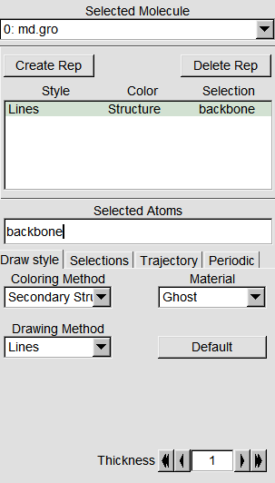
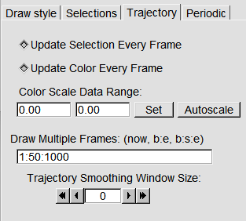
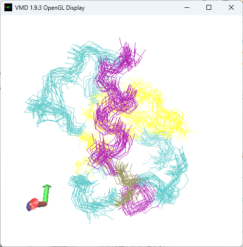
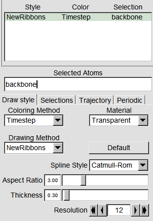
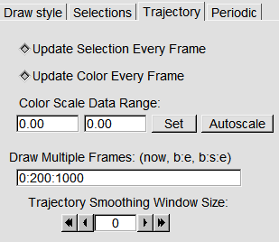
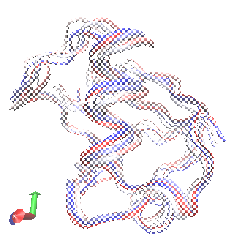
残基运动的可视化
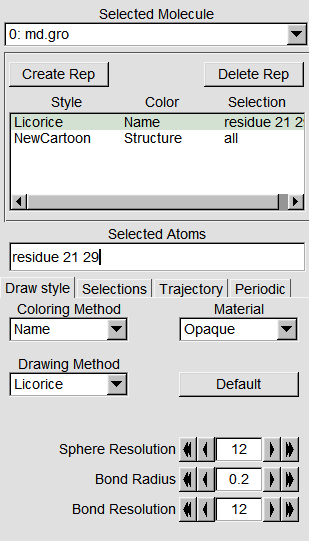
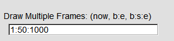
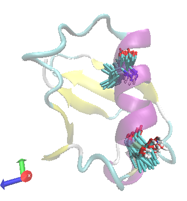
考察残基间的距离与接触
考察模拟过程中ASP21和LYS29间最小距离随时间的变化，以及两个组的原子间距离小于指定距离(-d指定)的原子对数随时间的变化：
首先构建包含这两个残基的索引文件
1
gmx make_ndx -f md.gro
输入r21和r29，然后按q。
之后运行
1
gmx mindist -f md.xtc -s md.tpr -n index.ndx -d 0.5 -on
依次选择r_21和r_29
如果接
-o，还会输出atm-pair.out，显示不同时刻两个组间相距最近的原子的编号。mindist.xvg 是两个组之间原子间 最近距离随时间的变化
numcont.xvg 是两个组之间原子间距离小于
-d指定的距离的原子对数 若不需要此数据则 mindist不需 要写-on如果加上
-or选项，mindist还会输出第二个组与第一个组当中各个残基在轨迹中最近的距离，记录到mindistres.xvg中。例如考察4147号NA离子与蛋白中各个残基在模拟过程中最近距离，先在index.ndx末尾加入
1
2[4147NA]
4147然后运行
1
gmx mindist -f md.xtc -s md.tpr -n index.ndx -or
选择Protein，再选择4147NA
通过pairdist也可以实现mindist功能，且更为灵活
例：计算21和29号残基最小距离随模拟时间的变化
1
gmx pairdist -f md.xtc -s md.tpr -ref "resid 21" -sel "resid 29"
得到的dist.xvg与mindist得到的mindistxvg相同。
测量残基质心、几何中心间的距离变化
考察21与29号残基间质心距离随时间的变化
1
gmx distance -s md.tpr -f md.xtc -select "com of resid 21plus com of resid 29" -oall
输出了平均值、标准偏差，同时得到distxvg(因用了
-oal)考察21号残基与蛋白质几何中心距离随时间的变化
1
gmx distance -s md.tpr -f md.xtc -select "cog of resid 21 pluscog of group ""protein"" -oall
亦可用卢天的comdist.tcl脚本来计算质心距离，结果与distance命令相同。
pairdist命令也可以
1
gmx pairdist -f md.xtc -s md.tpr -ref "com of resid 21" -sel "com of resid 29"
考察螺旋的基本结构参数
新建自录helix，进入其中
构建索引文件:
1
2gmx make_ndx -f ../md.gro
选q计算螺旋参数，会产生大量文件
1
gmx helix -f ../md.xtc -s ../md.tpr -n index.ndx
由于当前体系就一个螺旋，所以直接选Protein即可，程序也确实判断对了组成螺旋的残基：
1
helix from: 23 through 34
也可以人为用
-ahxstart和-ahxend指定螺旋中第一个和最后一个残基号。
螺旋弯曲度的分析
VMD-Extensions-Visualization-Bendix
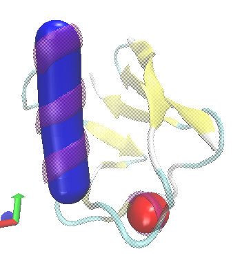
考察蛋白质表面附近水的分布
1 | gmx rdf -f md.xtc -s md.tpr -ref protein -sel "mol com of resname SOL" -surf mol -rmax 1 |
由于当前盒子较大，要求计算到1nm距离足矣，没必要计算不感兴趣的更远的地方白浪费时间。
研究高温对蛋白质的影响
接续之前298.15K的最终状态做400K的动力学。
建立400K子目录，将md.mdp拷入其中，把温度改成400K，时间设5ns。在此目录中运行以下命令:
1 | gmx grompp -f md.mdp -c ../md.gro -p ../topol.top -o md.tpr -t ../mnd.cpt -maxwarn 10 |
按照之前的做法计算RMSF，与298.15K下的情况进行对比。
钙调素 (2BBM) 的模拟
对pdb文件进行预处理
- pdb中钙离子残基名为CA,然而在要用的G54A7力场rtp文件中钙离子残基名为CA2+，因此需要做以下替换后保存。